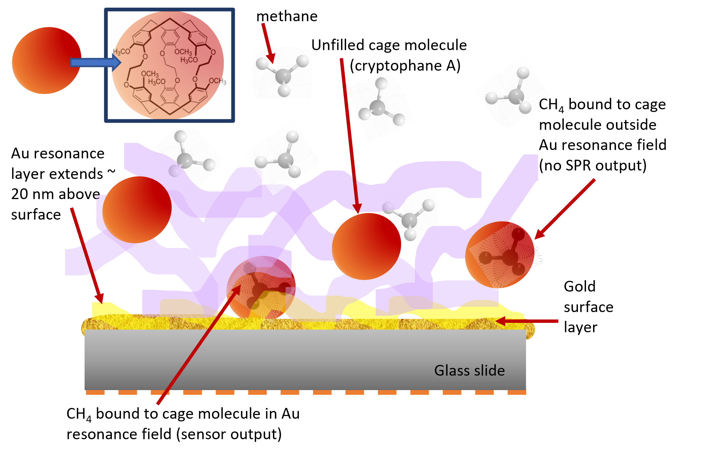
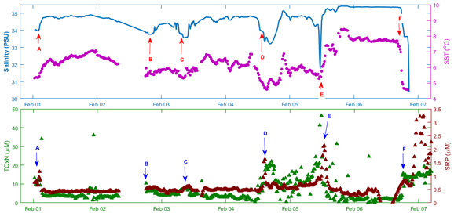
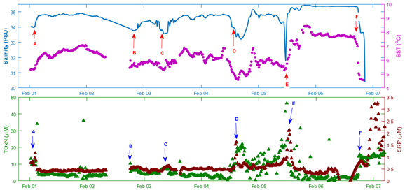

Project title:
Development of lab-on-chip sensors for ocean science, fisheries and aquaculture
Funding Details
NEXUSS studentship (Main Supervisor: Prof. Matt Mowlem)
Research Institute
National Oceanography Centre, University of Southampton, Cefas
Sensors on Smartbuoys with Cefas
Project title:
SmartBuoyAR - Augmented Reality for Ocean Technology Outreach
Funding Details:
University of Southampton Outreach Fund
Research Institute:
National Oceanography Centre, University of Southampton, Cefas
Industrial Partner:
CAD-Schroer-GmBH
Augmented reality project showcasing offshore ocean technology
Project title:
Funding Details:
University of Southampton EPSRC Impact Acceleration Account (PI: Dr. Rand Ismaeel), then MISSION
Research Institute:
National Oceanography Centre, University of Southampton Optoelectronics Research Centre
Developing tunable polymer layers to create a prototype surface plasmon resonance sensor for sensing dissolved methane gas in seawater
Project title:
Various
Funding Details:
Various
Research Institute:
National Oceanography Centre, University of Southampton, University of Bath, Clearwater Sensors Ltd.
Devloping colorimetric and fluorimetric assays for lab-on-chip sensors
Project title:
MRes Supramolecular Chemistry
Funding Details:
Synthesis of Bicarbonate Receptors (PI: Prof. Phil Gale)
Research Institute:
University of Southampton
Something about chemical synthesis project here
Project title:
Development of lab-on-chip sensors for ocean science, fisheries and aquaculture
Funding Details
NEXUSS studentship (Main Supervisor: Prof. Matt Mowlem)
Research Institute
National Oceanography Centre, University of Southampton, Cefas
Block of text about Ferrybox project here
 
